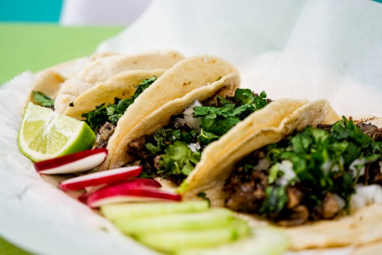

Home
Carne Asada Tacos

Description
Carne asada tacos are a popular Mexican street taco made with tender, marinated, and grilled beef topped with onion and cilantro all wrapped in a corn tortilla.
Ingredients
- 1 lb skirt or flank steak
- 1 bunch of cilantro
- 1 white onion
- 4 limes
- 3 tbsp Lawry's seasoned salt (or replace with your seasoning salt of choice)
Steps
- Remove onion's tunic and cut in half towards the root.
- Place each half with their inside faced into the cutting board and cut a small portion to remove nose of the onion.
- Dice the onion.
- Mince the cilantro.
- Place onion and cilantro into a bowl and mix.
- Slice all limes into halves.
- Dice the taco meat.
- Place taco meat into a bowl.
- Squeeze four lime halves into the bowl with the meat.
- Add seasoning salt into bowl with the meat then hand mix.
- Place meat into a pan and cook on med-high heat. Be sure to occasionally stir. Assuming meat is diced, the meat is cooked when dark brown.
- In another pan, warm up corn tortillas on low-med heat. Be sure to flip for even heating and to prevent burning.
- Place a line of meat across the diameter of the tortilla.
- Garnish the taco with the onion and cilantro mixture.
- Squeeze some fresh lime and sprinkle a little table salt over the taco.
- Enjoy!